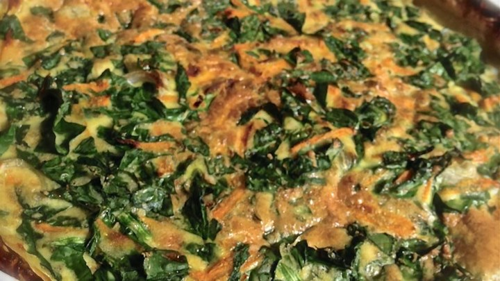

>>>Shredded Potato Quiche<<<
Ingredients
- 1 (16 ounce) package frozen shredded hash brown potatoes, thawed
- 1/4 cup butter, melted
- 5 eggs, lightly beaten
- 1 1/2 cups shredded Swiss cheese
- 1 cup cooked ham
- 1/4 cup milk
- salt and pepper to taste
Directions
- Preheat oven to 375 degrees F (190 degrees C).
Lightly grease a 9 inch pie pan.
- Press potatoes into greased pie plate. Brush with melted butter.
Bake in preheated oven until lightly browned, about 10 to 15 minutes.
- In a large bowl, stir together beaten eggs, milk, cheese, ham, salt
and pepper. Pour egg mixture into baked crust.
- Bake in preheated oven until center is set, about 20 minutes.
The quiche will be browned on top and a knife inserted into
the center will come out clean.
